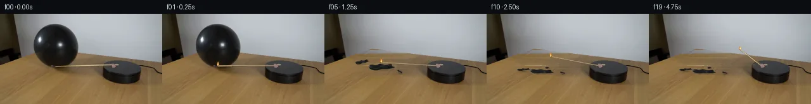

![首帧]()

Round 00
2026-11-05T12:37:57.938544+00:00像素候选变化代码 +279/−0inspection 更新
pixels 9c38a2d191f7a633 · code b90c45d9741ecd33
查看本轮 generate.py 真实 diff
--- previous/generate.py
+++ current/generate.py
@@ -0,0 +1,279 @@
+"""Deterministic local pixel continuation of the supplied scientific setup."""
+from pathlib import Path
+import json, math, hashlib
+import numpy as np
+from PIL import Image, ImageDraw
+from scipy.ndimage import gaussian_filter, binary_fill_holes, binary_dilation
+import cv2
+from artifact_io import save
+
+ROOT = Path(__file__).resolve().parent
+S = 4
+H, W = 144, 256
+Y, X = np.mgrid[:H, :W].astype(float)
+SOURCE = np.array(Image.open(ROOT / 'first_frame.png').convert('RGB'))
+F = SOURCE.astype(float)
+RNG = np.random.default_rng(114)
+
+
+def rear_edge(x):
+ return np.where(x < 75, 79.3 - .32*x, 55.3 + .131*(x-75))
+
+
+def design(x, y, kind):
+ x = (x-100)/100
+ y = (y-60)/60
+ if kind == 'wall':
+ return np.stack([np.ones_like(x), x, y, x*x, x*y, y*y,
+ x**3, x*x*y, x*y*y, y**3], -1)
+ return np.stack([np.ones_like(x), x, y, x*x, x*y, y*y], -1)
+
+
+def surface_fit(mask, kind):
+ d = design(X, Y, kind)
+ coef = np.linalg.lstsq(d[mask], F[mask], rcond=None)[0]
+ pred = d @ coef
+ err = np.sqrt(np.mean((pred[mask]-F[mask])**2, axis=0))
+ return pred, err
+
+# Fit only directly visible backdrop and table, with the balloon and cast shadow excluded.
+wall_known = (X > 32) & (X < 181) & (Y < rear_edge(X)-2)
+wall_known &= ~((X >= 51) & (X <= 126) & (Y >= 14) & (Y <= 87))
+wall_model, wall_rmse = surface_fit(wall_known, 'wall')
+# Match adjacent visible wall rows exactly at x=50 and x=127; retain polynomial curvature inside.
+u = np.clip((X-50)/77, 0, 1)
+left_res = F[:,50] - wall_model[:,50]
+right_res = F[:,127] - wall_model[:,127]
+wall_model += (1-u)[...,None]*left_res[:,None,:] + u[...,None]*right_res[:,None,:]
+wall_noise = F[:,130:211] - gaussian_filter(F[:,130:211], (1.2,1.2,0))
+wall_texture = wall_noise[:,np.clip((X[0]-49).astype(int),0,80)]
+wall_model += .30*wall_texture
+
+floor_known = (Y > rear_edge(X)+3) & (X > 10) & (X < 158)
+floor_known &= ~((X>48)&(X<145)&(Y<104))
+floor_model, floor_rmse = surface_fit(floor_known, 'floor')
+# Use actual wood texture from 45 pixels farther forward, with a shift along its grain.
+sx = np.clip(X-12, 0, W-1).astype(np.float32)
+sy = np.clip(Y+45, 0, H-1).astype(np.float32)
+wood = cv2.remap(F.astype(np.float32), sx, sy, cv2.INTER_LINEAR).astype(float)
+wood_detail = wood-gaussian_filter(wood,(2,2,0))
+floor_model += wood_detail
+# Smooth side illumination correction to avoid a visible seam around the revealed table.
+for y in range(58,101):
+ l = F[y,49]-floor_model[y,49]
+ r = F[y,128]-floor_model[y,128]
+ floor_model[y] += ((1-u[y])[...,None]*l + u[y][...,None]*r)
+edge_blend = np.clip((Y-rear_edge(X)+.55)/1.1,0,1)
+reveal = wall_model*(1-edge_blend[...,None]) + floor_model*edge_blend[...,None]
+
+# Segment the original balloon by contrast with the reconstructed background, fill highlights.
+candidate = ((reveal.mean(2)-F.mean(2))>18)&(X>=51)&(X<=125)&(Y>=15)&(Y<=85)
+balloon_binary = np.zeros((H,W),bool)
+row_bounds = []
+for y in range(15,84):
+ xx = np.flatnonzero(candidate[y])
+ if len(xx):
+ lo,hi=int(xx[0]),int(xx[-1])
+ balloon_binary[y,lo:hi+1]=True
+ row_bounds.append([y,lo,hi])
+balloon_binary = binary_fill_holes(balloon_binary)
+balloon_erasure = gaussian_filter(binary_dilation(balloon_binary,iterations=2).astype(float), .65)
+# Remove the persistent shadow of the formerly inflated balloon, with feathered boundaries.
+shadow_rad = ((X-92)/39)**2 + ((Y-86)/13)**2
+shadow_erasure = np.clip((1.15-shadow_rad)/.65,0,1)*(Y>rear_edge(X)+2)
+erase = np.maximum(balloon_erasure, shadow_erasure)
+POST = F*(1-erase[...,None]) + reveal*erase[...,None]
+
+# Repair the static shaft at its original location by interpolating immediate vertical neighbors.
… diff truncated; 192 more lines …